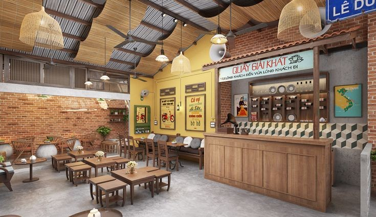
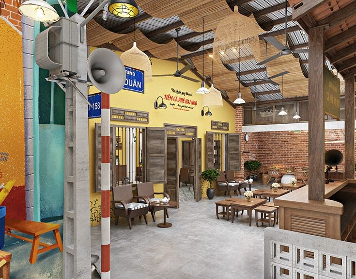
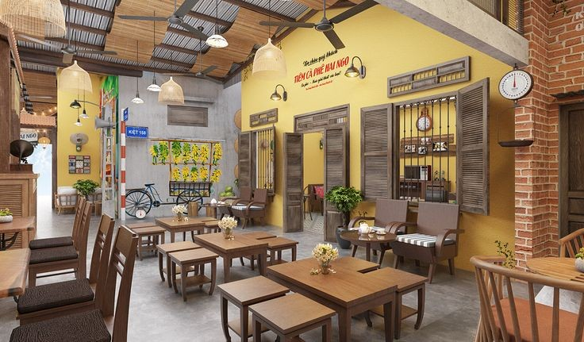
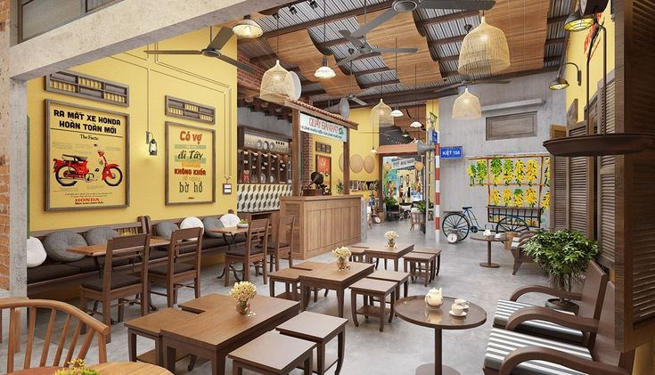

Shwe Nyar Thu is one of the best known ethnic restaurants in Myanmar. The brand has five branches in total, each branch contains its own uniqueness atmosphere, which targets its own customers.
Shwe Nyar Thu is a must-try Burmese restaurant that is recognised by Myanmar Restaurant Guide and guaranteed by all Local customers throughout the city and numerous international travellers for its great tastes and extra ordinary local dining experience.
|  |  |  |  |
We offer seasonal tasting menus that offer a journey throughout the different regions of the country, as well as our chef’s creative versions of traditional favourite dishes. Burmese Cuisine is not a one dish meal, where variety is key. Be open minded , try something new and treat your tastebuds to a symphony of flavors. The complexity results in dishes that truly nourish the soul.